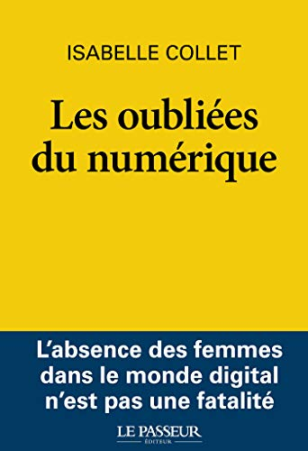
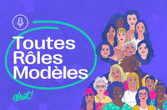

L'histoire des femmes dans la tech est riche et ces dernières années de nombreuses ressources voient le jour pour compter les femmes qui ont fait la tech et celles qui la font et celles qui la feront.
Un livre: Les oubliées du numérique |
|
|---|---|
|  |
Un livre essentiel d'Isabelle Collet pour comprendre pourquoi le numérique est massivement dominé par les hommes et quelles sont les solutions à mettre en place pour l'inclusion des femmes dans ce secteur, un enjeu crucial aujourd'hui. |
Un podcast: Toutes rôles modèles |
|
|---|---|
|  |
Aurore Bisicchia, cofondatrice de Chut! Magazine, tend le micro aux femmes qui font le numérique. Elle se racontent, à travers leurs parcours, leurs récits, leurs convictions et leurs questionnements. Ce podcast a pour but de recréer des modèles féminins dans l'imaginaire de chacun.e. |
Ce film mets en scène, au début des années 60, les calculatrices afro-américaines Katherine Johnson, Dorothy Vaughan et Mary Jackson qui ont contribué aux programmes aéronautiques et spatiaux de la National Aeronautics and Space Administration (NASA).